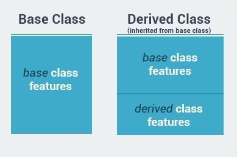

这篇文章上次修改于 336 天前，可能其部分内容已经发生变化，如有疑问可询问作者。
inheritance 继承
inheritance 继承是面向对象编程最重要的概念之一。继承允许我们基于已有的 class 创建新的 class。这能够极大的方便我们创建应用程序。
一个 class 的属性被其他 class 继承，我们称这个 class 叫做 base class。一个从 base class 继承属性的 class 我们称其为 derived class。一个 derived class 获得所有 base class 的功能，且可以有自己独有的功能：

继承的概念是 is a 属于是什么 的关系，例如：猫 is a 动物，狗 is a 动物。两者都继承了动物的属性。
我们来建立两个 class：Mother 和 Daughter：
class Mother
{
public:
Mother() {};
void sayHi() {
cout << "Hi";
}
};
class Daughter
{
public:
Daughter() {};
};Mother 有一个 sayHi() function。下面我们让 Daughter 继承 Mother 的属性，Daughter class 名称修改如下：
class Daughter : public Mother
{
public:
Daughter() {};
};使用一个冒号: 标记 base class。access specifier 访问标记符 public 表示所有 base class 里 public 段下的内容继承给 derived class 里的 public 段下。
以上示例中 Daughter 继承了所有 Mother 的 public 下的元素，所以我们可以实例化一个 Daughter 的 object 然后调用 sayHi() function 了：
#include <iostream>
using namespace std;
class Mother
{
public:
Mother() {};
void sayHi() {
cout << "Hi" << endl;
}
};
class Daughter: public Mother
{
public:
Daughter() {};
};
int main(int argc, const char * argv[]) {
Daughter d;
d.sayHi();
return 0;
}关于 access 访问标记符的使用，在下面会详细介绍使用方法。
一个 derived class 可以继承所有 base class 的 function 出过一下几种特殊情况类型：
- constructor and destructor 构造器和销毁器
- 复用操作符 function
- friend function
一个 class 可以同时继承多个 base class，使用逗号, 分隔 base class，如：class Daughter: public Mother, public Father。
protected 元素
对于 class 中的元素的 access 访问表示符，我们前面使用了 public 和 private。public 里的元素可以被外界访问或修改，private 里的元素只能被 class 内部使用，或者通过 friend function 来读取。
除了以上两种识别符外，还有一种类型：protected。
在 protected 内的元素和 private 段内的很类似。唯一的区别是，protected 内的元素可以被 derived class 访问。
例如我们给 Mother 添加一个 protected 元素：
class Mother {
public:
void sayHi() {
cout << var;
}
private:
int var=0;
protected:
int someVar;
};someVar 变量可以被 Daughter 访问。
继承的类型
access 访问标记符能够用来定义继承类型。
在上面的示例中我们使用 public 作为访问标记符：class Daughter: public Mother。private 和 protected 同样可以被使用。
三者的区别：
- Public Inheritance: base class 里 public 段内的元素继承到 derived class 里的 public 段内，base class 里 protected 段内的元素继承到 derived class 里 protected 段内，base class 里 private 段内的元素永远不能能够被 derived class 直接访问，但可以通过 public 或 protected 内的 function 来间接获取数据。
- Protected Inheritance: base class 里 public 和 protected 段内的元素继承到 derived class 里的 protected 段内。
- Private Inheritance: base class 里 public 和 protected 段内的元素继承到 derived class 里的 private 段内。
public 继承类型在继承中是最常用的。如果在程序中没有指定某个继承类型，则默认为 private。
构造器和销毁器
上面提到了 derived class 不会继承 base class 的构造器和销毁器。但是 derived class 的实例 object 在被建立和销毁时，base class 的构造器和销毁器会被自动调用。
我们建立 Mother class：
class Mother
{
public:
Mother() {
cout << "mother's constructor" << endl;
}
~Mother() {
cout << "mother's destructor" << endl;
}
};
int main(int argc, const char * argv[]) {
Mother m;
return 0;
}实例化 Mother 后，输出如下：
mother's constructor
mother's destructor然后我们建立 Daughter class：
class Daughter: public Mother
{
public:
Daughter() {
cout << "daughter's constructor" << endl;
}
~Daughter() {
cout << "daugther's destructor" << endl;
}
};
int main(int argc, const char * argv[]) {
Daughter d;
return 0;
}实例化 Daughter 后，输出如下：
mother's constructor
daughter's constructor
daugther's destructor
mother's destructor可以看到当 Daughter 的 object 创建时，首先 base class 的构造器被调用，然后调用 derived class 的构造器。
当 object 销毁时，首先 derived class 的销毁器被调用，然后 base class 的销毁器被调用。
你可以理解为 derived class 依赖于 base class 才能工作，所以 base class 需要首先被执行。
多态性
polymorphism 多态化意思是：拥有多种样式。通常多态化出现在那些有着继承关系的 class 中。在 c++ 中多态性意思是在调用同一个 function 时随着 object 类型的不同而有着不同的执行效果。
下面举例说明：我们创建一个游戏，有两种人物：monster 怪物和 ninja 忍者。他们都有一个共同的 function：attack，但是两者攻击的模式是不同的。在这个场景下，多态性能够实现不同的 objects 调用同样的 attack function 而有不同的实现效果。
首先创建一个 Enemy class：
class Enemy {
protected:
int attackPower;
public:
void setAttackPower(int a){
attackPower = a;
}
};Enemy class 有一个public function：setAttackPower 来设置 protected 里的参数：attackPower。
然后我们建立两个 derived class 以 Enemy 为 base class，各自有独立的 attack function：
class Ninja: public Enemy {
public:
void attack() {
cout << "Ninja! - "<<attackPower<<endl;
}
};
class Monster: public Enemy {
public:
void attack() {
cout << "Monster! - "<<attackPower<<endl;
}
};在 main 中实例化：
int main() {
Ninja n;
Monster m;
}由于 Monster 和 Ninja 都继承自 Enemy，所以他们的实例 object 也都是 Enemy 类型的 object。我们可以如下定义：
Enemy *e1 = &n;
Enemy *e2 = &m;我们定义两个 Enemy 类型的指针指向两个 object。
在 main 中调用对应的 function：
int main(int argc, const char * argv[]) {
Ninja n;
Monster m;
Enemy *e1 = &n;
Enemy *e2 = &m;
e1->setAttackPower(20);
e2->setAttackPower(80);
n.attack();
m.attack();
return 0;
}两个指针都是 Enemy 类型的，所以可以用来使用 Enemy 中的 function 设置参数，然后分别调用 derived class 的 object 的 attack function。注意这里没法用这两个指针直接调用 attack()，因为 Enemy 中并没有定义这个 function。
虚拟 function
上面的示例中，我们使用 Enemy 类型的指针指向了 derived class 的 object。但是我们无法使用这个指针调用 attack function，因为在 base class 中不包含这个 function。为了实现这个功能，需要在 base class 中定义一个 attack 的 virtual function。
virtual function 的意义就是在 base class 里定义一个 function，在 derived class 内 override 重写这个 function，这样就可以实现多态化，使用 base class 类型的指针调用同一个 function 根据 derived class 的不同而实现不同的功能。
使用关键词 virtual 定义 virtual function：
class Enemy {
protected:
int attackPower;
public:
virtual void attack() {}
void setAttackPower(int a){
attackPower = a;
}
};在 Enemy class 中我们定义一个 attack 的 virtual function，然后在两个 derived class 中重写这个 function 使其有着不同的内容。
现在我们就可以使用 Enemy 类型的指针调用 attack function了：
int main(int argc, const char * argv[]) {
Ninja n;
Monster m;
Enemy *e1 = &n;
Enemy *e2 = &m;
e1->setAttackPower(20);
e2->setAttackPower(80);
e1->attack();
e2->attack();
return 0;
}virtual function 类似于一个模版，告诉 derived class 可以定义属于自己的这个 function 功能。指针在调用时会根据 object 属于哪个 derived class 而去具体完成指令。
一个包含有 virtual function 的 class 称之为多态化的 class。
当然在 base class 内的 virtual function 也可以给其具体的指令，我们给 Enemy class 里的 virtual attack function 定义内容：
class Enemy {
protected:
int attackPower;
public:
virtual void attack() {
cout << "Enemy! - " <<attackPower << endl;
}
void setAttackPower(int a){
attackPower = a;
}
};然后创建一个 Enemy 的 object 及其指针，尝试调用其 attack function：
int main(int argc, const char * argv[]) {
Ninja n;
Monster m;
Enemy e;
Enemy *e1 = &n;
Enemy *e2 = &m;
Enemy *e3 = &e;
e1->setAttackPower(20);
e2->setAttackPower(80);
e3->setAttackPower(30);
e1->attack();
e2->attack();
e3->attack();
return 0;
}输出如下：
Ninja! - 20
Monster! - 80
Enemy! - 30这就是多态化 class 的优势，不同的 derive class 使用同一名称的 function 在不同的场景下执行不同的指令。
abstract class
当我们在 base class 中定义 virtual function 时，在 base class 中并没有此 function 具体要实现的内容，只有在 derived class 中才需要做定义。这种情况下，可以将 base class 中的 virtual class 定义为 pure virtual functions 纯粹的虚拟 function 而不需要定义它的任何内容。使用 =0 来进行表示：
class Enemy {
public:
virtual void attack() = 0;
}; 如果 base class 中定义了 pure virtual functions，那么在 derived class 中必须重写此 function，否则在实例化 derived class 时编译器会报错。
这种包含有 pure virtual functions 的 class 叫做 abstract class 抽象化的 class，这种 class 不能直接实例化 object，会产生报错。必须实例化其 derived class 且重写了 virtual function。
现在实例化 Enemy 的 object 会报错：
Enemy e; // Error
这种 pure virtual functions 的好处是，我们可以直接定义 base class 类型的指针指向不同的 derived class object，然后使用同样的 function 名称来执行不同的指令。
没有评论